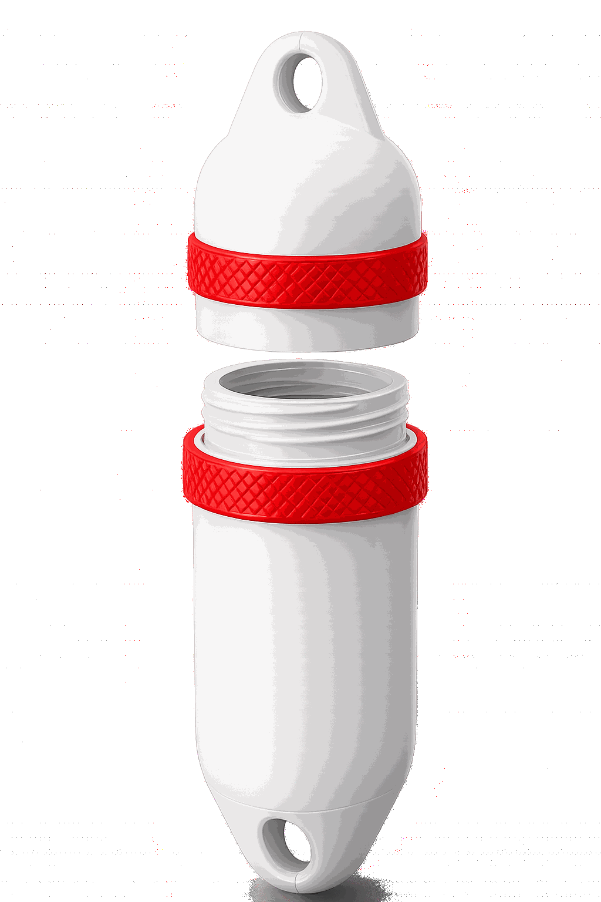

Kayak
Sangle-le sur le pont, glisse-le sous l'élastique. Tes papiers restent au sec.
Sea fender bag est né d'une idée simple : redonner vie aux pare-battages usagés.
Récupérés sur les ports, les coques et les pontons, ces flotteurs robustes sont réinventés en un rangement parfaitement hermétique. Conçus pour suivre tes aventures sur l'eau comme sur la terre, ils protègent l'essentiel — téléphone, clés, papiers, snacks — partout où l'eau et la poussière menacent.
— Upcycling marin, pensé en Méditerranée.

Les deux parties se séparent pour libérer l'espace de rangement.
Tu ranges ce que tu veux garder au sec, sans ajouter de sac en plus.
Le bouchon se revisse sur la partie basse et verrouille le rangement.
Tes affaires restent protégées de l'eau pendant le transport ou l'utilisation.
Sport, aventure, exploration. Sea fender bag t'accompagne là où l'eau, la sueur et la boue ne pardonnent rien.
Sangle-le sur le pont, glisse-le sous l'élastique. Tes papiers restent au sec.
Fixé sur le D-ring, tu gardes l'esprit léger. Et le téléphone en sécurité.
Accroché au sac, il survit aux averses, aux torrents, aux pauses dans la rosée.
Pose-le près de la serviette, tes affaires restent protégées du sable, des éclaboussures et du sel.
Choisis une partie du projet pour découvrir les détails.
« L'océan donne, l'océan reprend.
Entre les deux, il y a ce que l'on choisit d'en faire. »
— Sea fender bag
Sea fender bag est encore au stade prototype. Si tu veux suivre l'aventure, collaborer, ou simplement échanger — écris-nous.
hello@seabumpers.fr